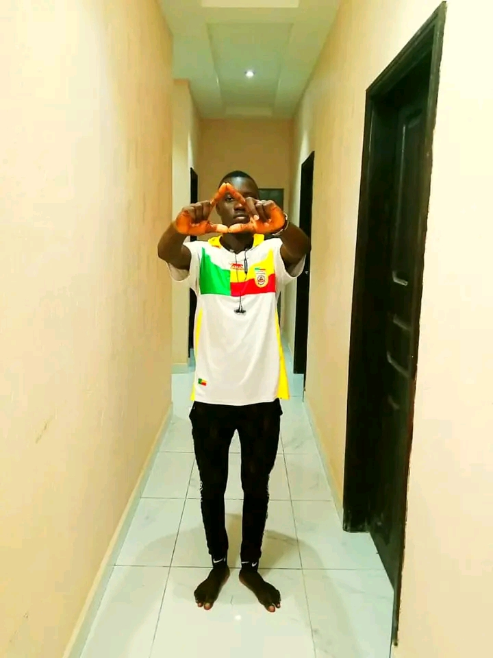
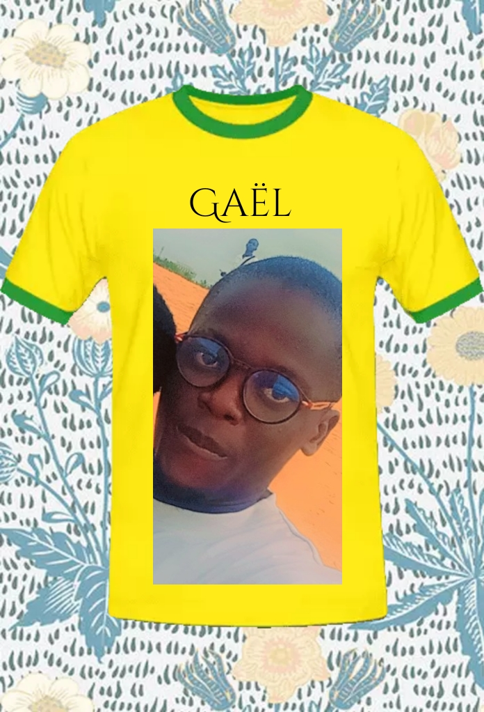
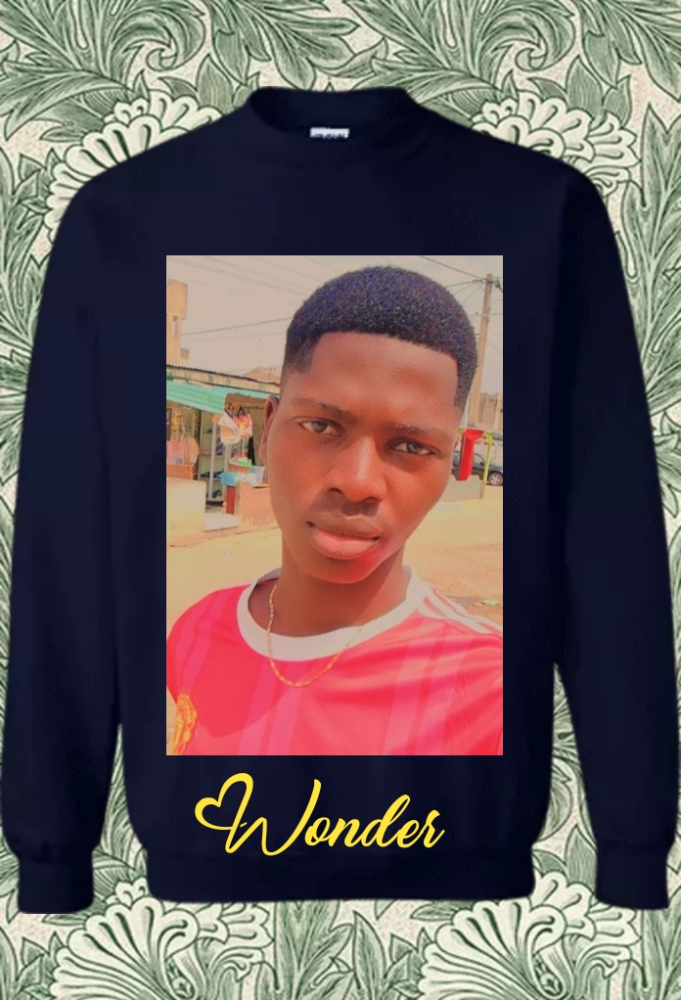
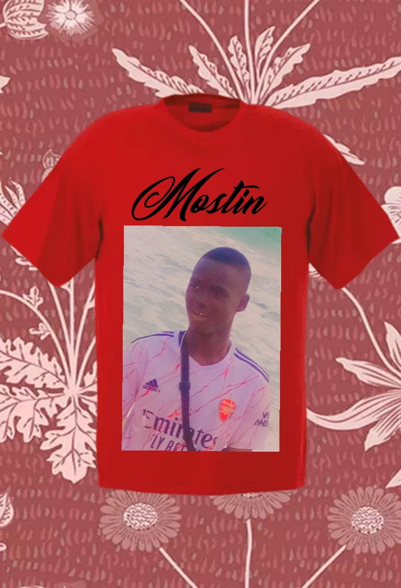
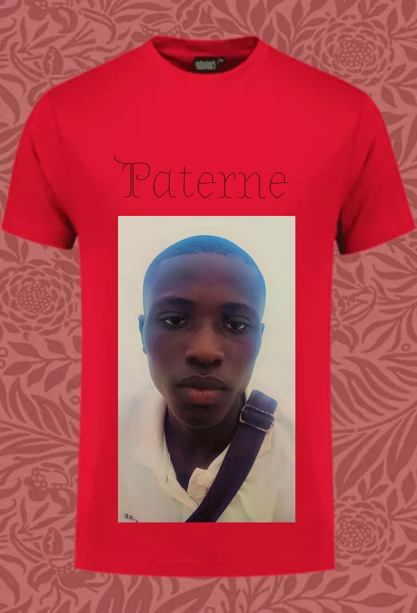
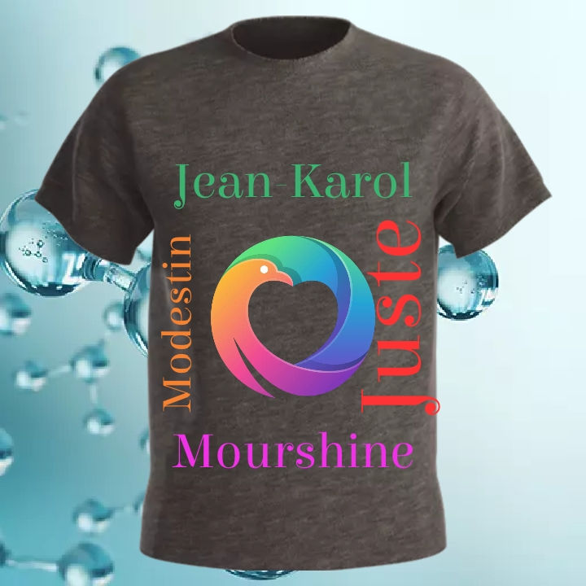
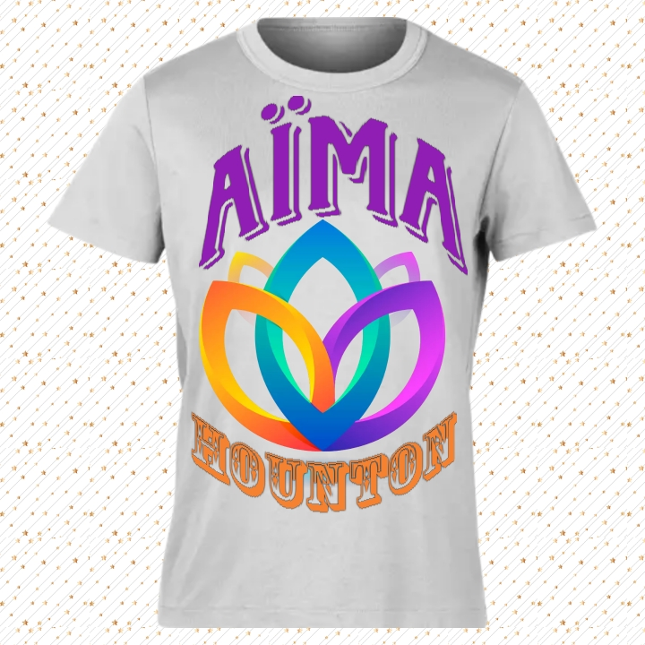
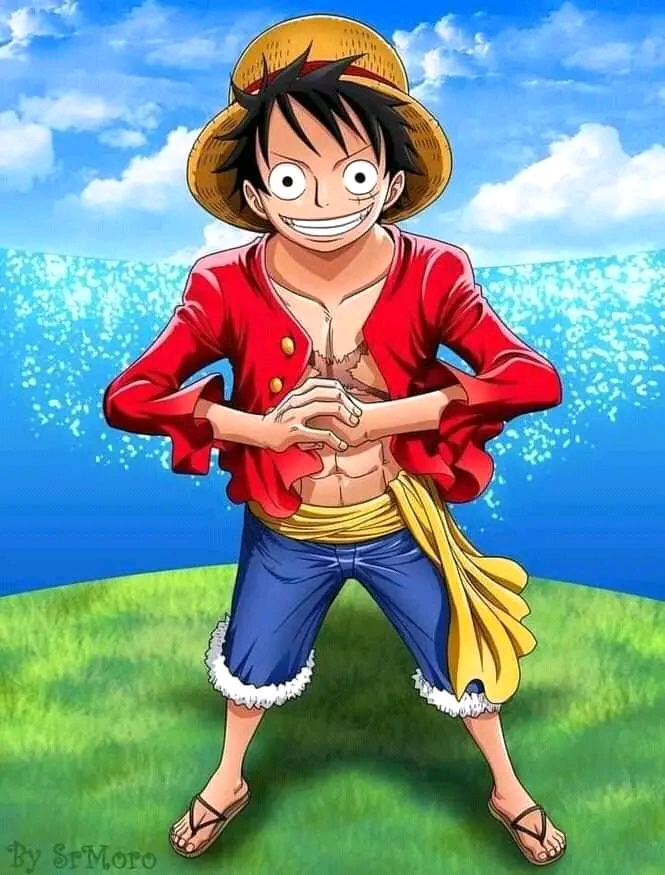

Né le 12 Aoùt .....,on me donna comme nom et prénom: DHT N. Belleface . Venu à Cotonou l'année passée,j'ai commencé la TleD au CEG KOUHOUNOU-VEDOKO
dont j'ai connu beaucoup d'amis parmi lesquels j'ai formé un groupe de #GANG avec quatre(4) personnes composée de: Merveil;Wilfrid;Paterne et Mostin. Avec ce groupe j'ai construis beaucoup de choses et de souvenir.
Après le BAC chacun de nous s;est dirigé dans son domaine d'étude mais sommes toujours en contact. Commença mes études unuversitaires à l'Ecole Nationale d'Economie Appliquée et de Management(ENEAM),
j'ai connu aussi d'autres dont quatre(4) garçons:Jean-Karol;MOdestin;Juste et Abiola ainsi qu'une(1) fille nommée Aima. Je vous ferai leur
description dans les lignes à suivre.


DROGBA M.G.B Wilfrid est son nom et prénom. Un frère avec qui je forme un jumeau sur terre. Et tout le monde nous voit comme des jumeaux.
On se confie tout sans oublié une virgule ni un point. Tu me cherches et tu le trouves s'est que tu m'as trouvé et idem pour lui aussi. Ont s'entraide
dans tout sauf (???). Nos parents nous connaissent et nous aiment bien. Bref il est le plus gâté du groupe concernant les meufs. Il a de go en pagaille.
Et ce que j'aime chez lui c'est qu'il se bat comme un fou. Il aide beaucoup le groupe en ce qui concerne les recherches des affaires(business).
Il n'est pas si compliqué mais on le ment pas ni ne le trahit sinon tu verras dans WC il mange GABA...

Lui c'est AYADJI A. Merveil dit #Wonder,c'est le plus pagailleur de notre groupe #Gang. Avant de te saluer,il t'insulte un peu d'abord.
Il s'en fou de tout le monde et fait ce qui lui passe par la tête. Il adore insulter ce qui est son grand defaut. C'est un frère avec qui je partage
beaucoup de choses et j'ai confiance en lui. Il est un vrai gbévou du groupe car il s'est fais ami avec des vrais gang du pays. Ce qui lui fait perdre
parfois la tête. Sinon il est simple mais compliqué et bizzare. Et souvent il aime me taper sans raison. Mais on forme un vrai groupe.

Hum un vrai #Mostino de son pseudo et EYEMI A.Mostin son vrai nom. Tellement elancé,il est le plus courageux parmi nous en ce qui concerne les
informations sur une fille. il est tertu et pagailleur. Il n'est rien qu'un vrai vagabon. Mais il se respect et aime me taquiner quand il n'a rien à faire.
Il est tout le temps dans les filles de gauche vers la droite et du haut vers le bas. C'est comme si son signe astrologie est Fille. C'est un vrai voyou
du groupe. En tout il est digne de confiance.

Et lui c'est le plus petit parmi nous.De nom QUENUM A. Paterne. Un petit intelligent respectueux talentueux et qui s'est bien lavé les mains. Donc il peut manger avec
les grands personnes. Il ne parle mais quand il veut parler c'est du loup. Il n'aime pas trop les histoires des filles. ¨Parfois on se demande s'il va
bien. On s'est même pas s'il a une meuf ou part. Mais on dis souvent que les plus serieux sont les plus gâté. Et ce que j'aime chez lui c'est ses manières de faits. Et il est vraiment digne de confiance.

Et c'est un groupe de quatre(4) garçons composé de:Jean-Karol;Juste;MOdestin et Abiola. On s'est rencontré à l'ENEAM. Je les considère comme
mes frères du sang car on partage beaucoup de chose surtout avec Jean-karol et MOdestin. Les quatre adorent jouer au jeu de Ludo en ligne.
Ce qui fait les unis.

Une fille simple et sympatique. Elle parle pas beaucoup et me respecte beaucoup. Elle s'appelle HOUNTON A. Rosette.
On s'est rencontré à l'ENEAM aussi et elle s'assoie toujours à côté de moi. Ce qui fait d'elle ma confidentielle. On parle beaucoup
et de tout ou rien. On a confiance l'un à l'autre comme si ont se connaissaient depuis des décennies. Elle est adorable et très belle aussi.
On partage un grand lien qui poussent certains(es) à penser parfois qu'on est en couple elle et moi. Ce qui n'est pas vrai actuellement.
Bref on amuse bien on cause bien et on joue bien aussi. Suis fier de faire sa connaissance .

Fadoul ALLADE est son nom. Il est un ami comme un frère. On s'est rencontré à l'ENEAM. Il m'aide beaucoup en ce
qui concerne la compréhension des certaines matières surtout les matières basées sur l'ordinateur. Je le taquine beaucoup
car ont cause très et ont se dis prèsque tout. Il a confiance en moi et de même. Mais il déteste surtout le mensonge.
Lui c'est un sang. De son nom BOGNON Amos,il est tout pour moi.Ont s'adorent trop car on partage tout sans exception.
Il connait tout sur moi et moi aussi je connais tout sur lui.On est tellement lié au point on fait rien sans prévenir l'autre.
On s'est vu pour la prémière fois dans un quartier nommé DJEGAN-KPEVI d'oü on est devenu un sang.
On blague ensemble,
on cause ensemble et on cherche querelle ensemble. On fait plein de chose pour avoir une vie meilleur. On se bat jour et
nuit pour venir au secours des autres. On se ment jamais. Et nos parents nous très bien car nous formons *UN*. C'est
un frère que j'aime beaucoup car je lui parle pas deux fois. Et ce qui est bien on s'écoute. Et on s'aime bien...
Essentiel
Un(e) vrai(e) ami(e) est un intrui que tu connais de nul part mais à qui tu as confiance.Cette personne est toujours là pour toi pendant tes moments
de souffrances comme de joies. C'est comme un ange de Dieu car il ou elle est là pour t'aider à éviter certaines erreurs de la vie. IL te lache jamais
et te protège contre pour beaucoup de chose. Il est comme ta 2ème famille. Il te cache rien et tu lui caches rien non plus. Tu te sens en sécurité
quand tu es avec lui ou elle. Meme ci parfois vous faite de la pagaille aillez aussi l'esprit de travailler. Et parfois vous devez vous batre
vous insultez car c'est ce que font les vrais amis selon les sages.
Donc c'est ce qui se passe entre mes vrais amis et moi.